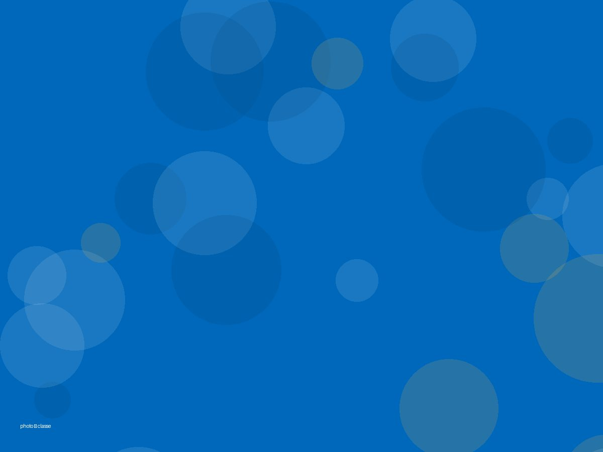
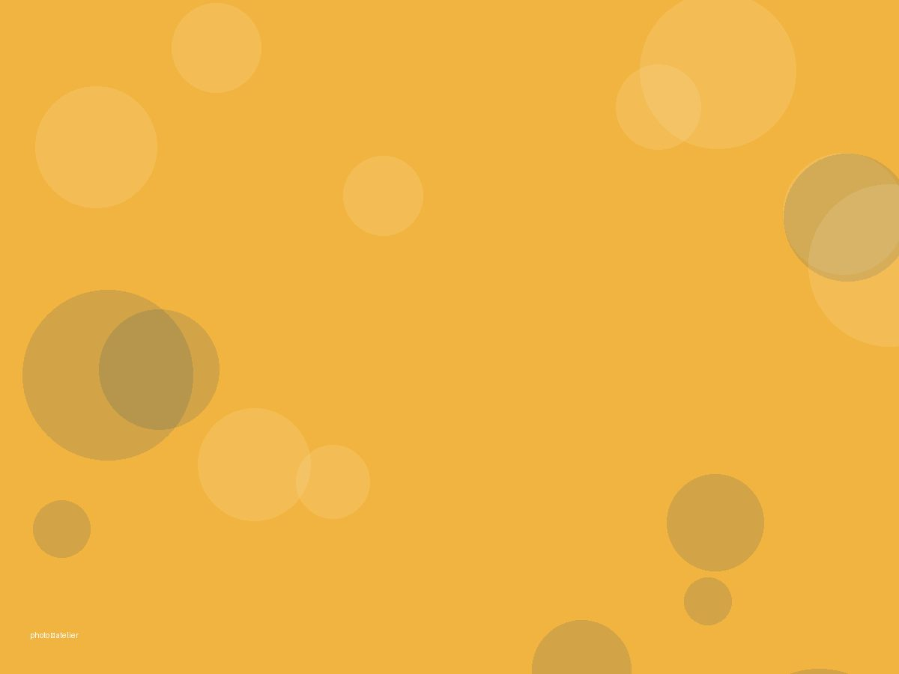
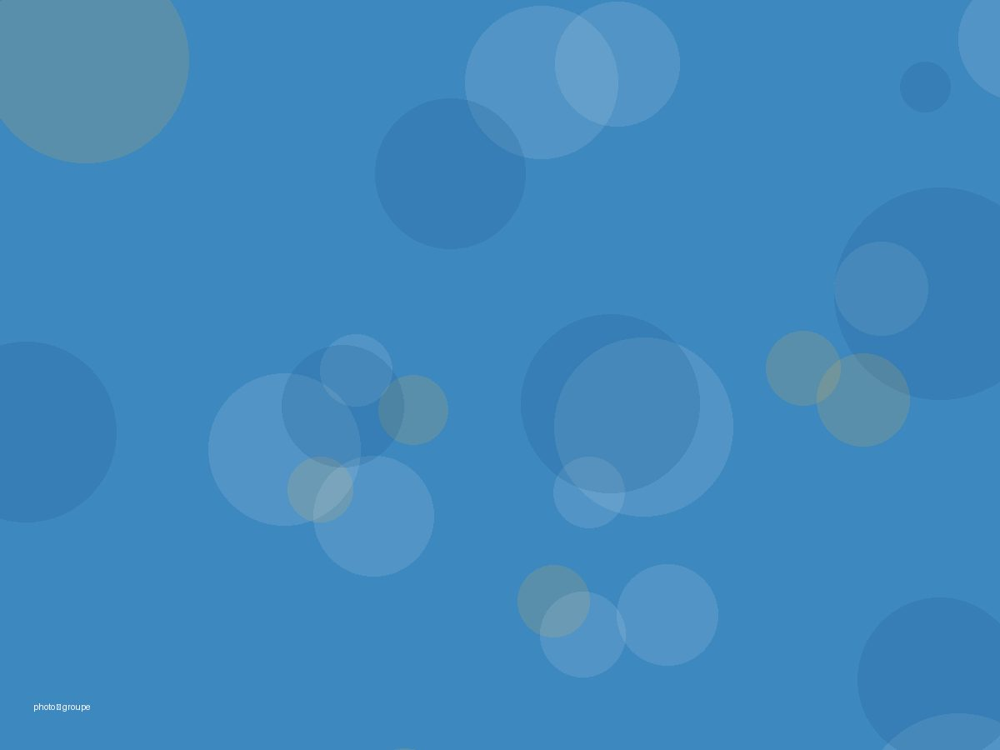
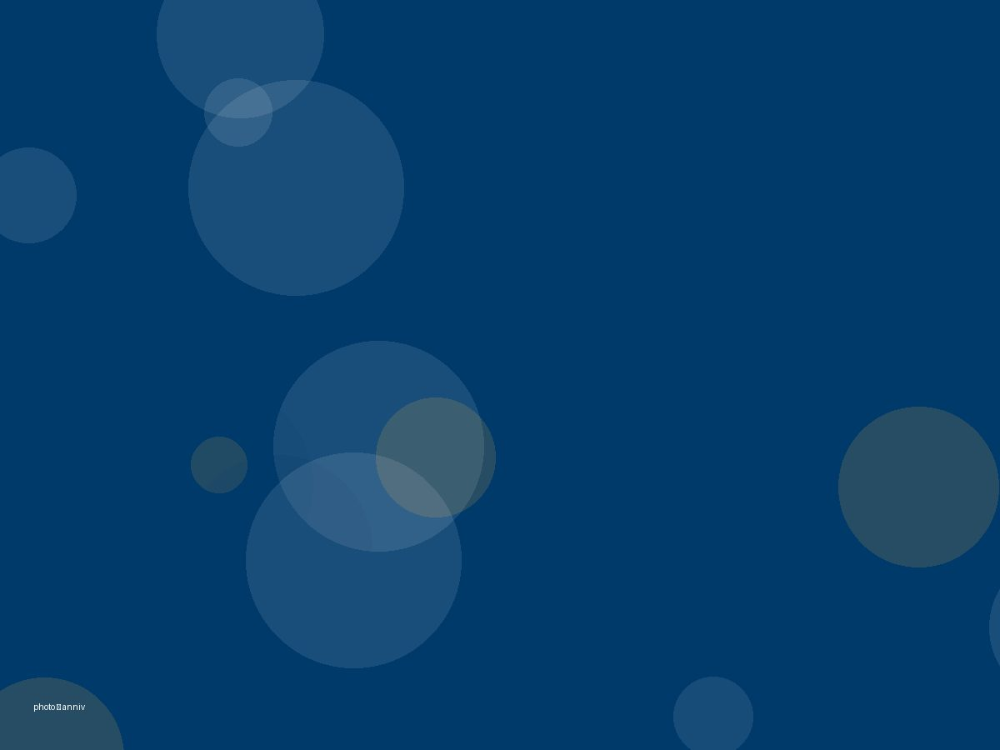
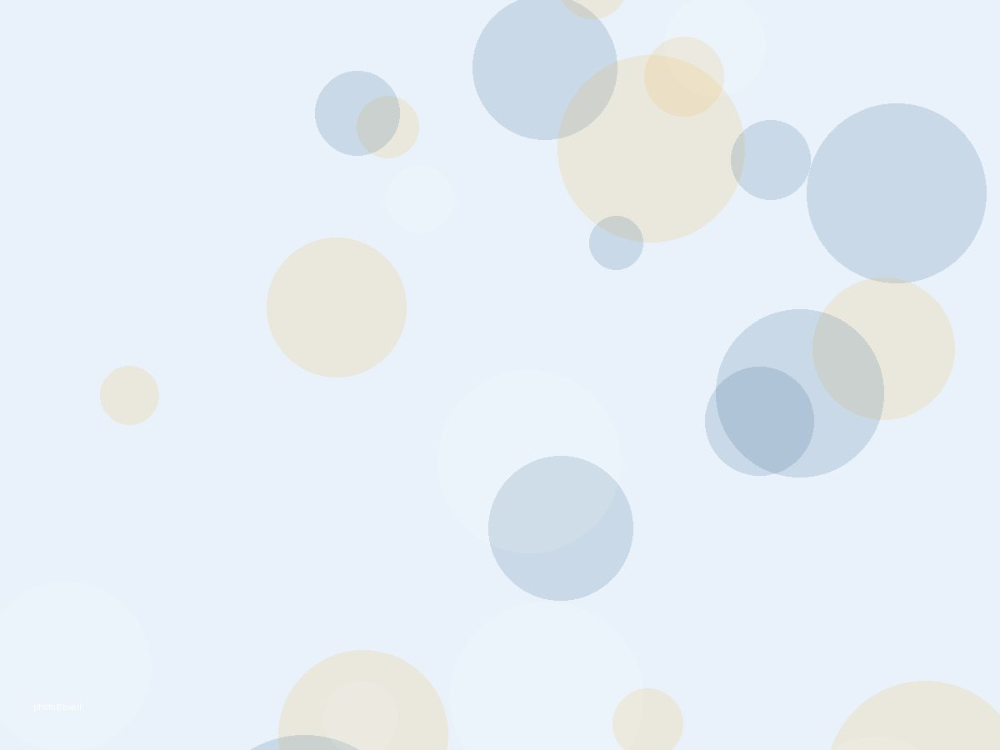

3 – 4 ans
Petite section
La première rentrée. On apprend à quitter maman, à partager un jouet, à dire son prénom devant les autres. Le jeu est notre principal outil.
AutonomieLangageMotricité
Maternelle privée · El Jadida
Depuis 1986, les familles d'El Jadida nous confient leurs enfants de la petite à la grande section. Quarante ans plus tard, certains de nos parents d'aujourd'hui étaient nos élèves d'hier.



au service des familles d'El Jadida, sans interruption
premiers au niveau national, en 2017-18 et 2024-25
langues enseignées dès les premières années
pour préparer sereinement l'entrée au primaire
Notre histoire
L'Ange Bleu a ouvert ses portes en 1986. Depuis, des générations d'enfants d'El Jadida y ont appris à tenir un crayon, à compter jusqu'à dix, à se faire des amis. L'école a grandi, les méthodes ont évolué — l'attention portée à chaque enfant, elle, n'a pas bougé.
Certains de nos parents d'aujourd'hui étaient nos élèves d'hier.
Les trois sections
De 3 à 6 ans, chaque section a son rythme, ses apprentissages et ses petites victoires. L'enfant qui entre en petite section n'est plus le même en juin de sa grande section.
La première rentrée. On apprend à quitter maman, à partager un jouet, à dire son prénom devant les autres. Le jeu est notre principal outil.
L'enfant prend confiance. Il reconnaît les lettres, compte, construit des phrases dans trois langues et commence à raconter ses journées.
L'année qui prépare le primaire. Lecture, écriture, calcul, mais aussi la capacité à rester concentré et à travailler seul.

Cette année, toute l'école célèbre ses quarante ans. Les enfants de grande section ont façonné le chiffre 40 en pâte à sel, en pâte à modeler et en douceurs sucrées.
Pourquoi nous
Arabe, français et anglais s'installent naturellement, par le jeu et la chanson, à l'âge où le cerveau les absorbe le plus facilement.
Un effectif volontairement contenu. L'enseignante connaît chaque enfant, ses progrès, ses difficultés, et ce qui le fait rire.

Nos enseignantes ne changent pas chaque année. Cette stabilité, dans une maternelle, vaut plus que n'importe quel programme.
Après la grande section, votre enfant poursuit au primaire du groupe, puis au collège et au lycée. Pas de nouvelle école à chercher.
Le groupe a été classé premier au niveau national en 2017-2018, puis à nouveau en 2024-2025. Une exigence qui commence dès la maternelle.
À El Jadida, notre meilleure publicité reste les parents qui nous envoient leur deuxième enfant, puis leurs petits-enfants.
Après la maternelle
La grande section n'est pas une fin. Votre enfant poursuit au primaire du Groupe Scolaire L'Ange Bleu, puis au collège et au lycée — même exigence, même équipe, même esprit. Aucune nouvelle école à chercher, aucun dossier à refaire.
Les premiers pas : autonomie, langage, trois langues, préparation au CP.
Lecture, écriture, calcul. Les fondations de toute la scolarité.
L'esprit critique, les méthodes de travail, l'orientation qui se dessine.
Le baccalauréat, et l'entrée dans le supérieur. Deux fois premiers du Maroc.
Les élèves de grande section sont prioritaires à l'entrée en CP. Pas de liste d'attente, pas de dossier de candidature à refaire.
Un seul établissement pour toute la fratrie : un seul trajet le matin, un seul interlocuteur, une seule réunion de parents.
L'enseignante de CP sait déjà où en est votre enfant. Rien ne se perd entre la maternelle et le primaire.
Une journée type
Une maternelle, ce n'est pas une garderie. Chaque moment de la journée a un objectif — même la récréation, où l'enfant apprend à négocier, partager et se faire comprendre.
On dit bonjour, on range son cartable, on colle sa photo au tableau de présence. Ces gestes rassurent et marquent le début de la journée.
Langage, graphisme, découverte des nombres. C'est le moment où l'attention est la meilleure, on y place les apprentissages exigeants.
Se dépenser, jouer avec les autres, apprendre à attendre son tour. Une part essentielle de la journée, pas une simple pause.
Français ou anglais selon les jours, par la chanson, les images et le jeu. Jamais par la grammaire, jamais par la contrainte.
Un repas équilibré, préparé sur place. On apprend à tenir sa fourchette, à goûter, à débarrasser son assiette.
Les petites sections dorment, les plus grands lisent ou dessinent. Le rythme est adapté à l'âge, jamais imposé.
Peinture, musique, motricité, jardinage. C'est là que les enfants montrent ce qu'ils aiment, et que nous l'observons.
Le cartable, le mot du jour aux parents, et pour ceux qui restent, la garderie jusqu'à 18h.
Le quotidien
Repas préparés sur place, équilibrés et adaptés aux jeunes enfants. Les allergies sont signalées et respectées.
Des circuits couvrant les quartiers d'El Jadida, avec un accompagnateur à bord et une prise en charge à votre porte.
Accueil dès 8h et jusqu'à 18h, pour les parents dont les horaires ne s'arrêtent pas à la sortie de l'école.
Accès contrôlé, personnel présent à chaque entrée et sortie, et aucun enfant remis à une personne non autorisée.
Un carnet de liaison, des réunions régulières, et une porte ouverte quand une inquiétude ne peut pas attendre.
Une trousse, un lieu au calme, et un appel systématique aux parents dès qu'un enfant ne se sent pas bien.
Ce que disent les familles
À El Jadida, on choisit une maternelle sur le conseil d'un voisin, d'un cousin, d'une collègue. Depuis quarante ans, c'est ainsi que les familles nous trouvent.
Emplacement réservé aux vrais avis de familles, recueillis avec leur accord. Aucun témoignage ne sera inventé.
Questions fréquentes
Une question qui n'est pas ici ? Appelez-nous ou passez à l'école : nous répondons plus volontiers de vive voix.
Portes ouvertes
Beaucoup d'écoles ouvrent leurs portes un dimanche, dans des locaux vides. Nous préférons vous recevoir en semaine, pendant que les enfants sont là : c'est la seule façon de voir comment on travaille vraiment.
Une visite dure trente minutes. Vous voyez les classes, vous rencontrez l'équipe, et votre enfant découvre l'endroit où il passera trois années.